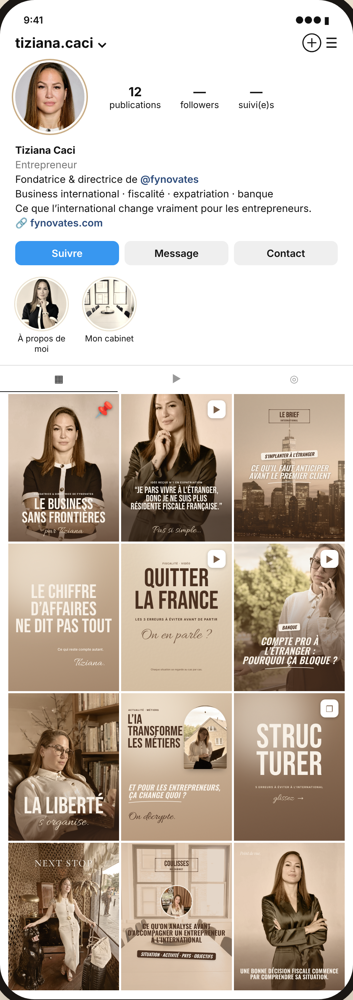
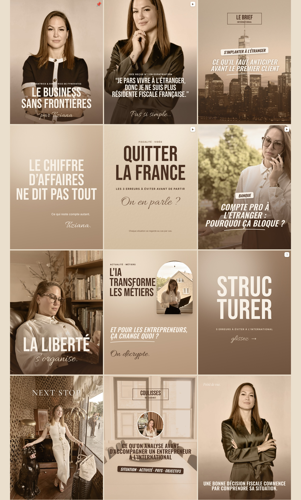

<!doctype html>
<html lang="fr"><head><meta charset="utf-8"><title>Tiziana Caci — Direction artistique Instagram</title>
<style>
@font-face{font-family:'Bebas Neue';src:url(../tiziana-instagram-professional/src/typefaces/bebas-neue-latin-400-normal.woff2)}
@font-face{font-family:'Oswald';src:url(../tiziana-instagram-professional/src/typefaces/oswald-latin-wght-normal.woff2);font-weight:200 700}
@font-face{font-family:'Allura';src:url(../tiziana-instagram-professional/src/typefaces/allura-latin-400-normal.woff2)}
@font-face{font-family:'Inter';src:url(../tiziana-instagram-professional/src/typefaces/inter-latin-wght-normal.woff2);font-weight:100 900}
@font-face{font-family:'Cormorant';src:url(../tiziana-instagram-professional/src/typefaces/cormorant-garamond-latin-500-normal.woff2)}
@page{size:297mm 210mm;margin:0}
*{box-sizing:border-box;margin:0;padding:0}
html,body{background:#888}
body{font-family:Inter;color:#4A3020;-webkit-print-color-adjust:exact;print-color-adjust:exact}
.page{width:297mm;height:210mm;position:relative;overflow:hidden;background:#F3EADB;page-break-after:always;break-after:page;padding:16mm 18mm}
@media screen{.page{margin:10mm auto;box-shadow:0 10px 30px rgba(0,0,0,.3)}}
.dark{background:#4A3020;color:#F8F1E7}.taupe{background:#A88C72;color:#F8F1E7}.sand{background:#E4D3BC}
.kick{font:700 8.5pt/1 Inter;letter-spacing:.2em;text-transform:uppercase;color:#7A5E48}.dark .kick,.taupe .kick{color:#E4D3BC}
h1{font:400 64pt/.88 'Bebas Neue';letter-spacing:.005em;margin-top:5mm}
h2{font:400 40pt/.9 'Bebas Neue';margin-top:3mm}
.sc{font-family:Allura;font-weight:400}
p{font-size:10pt;line-height:1.55}
.lead{font-size:11.5pt;line-height:1.55;max-width:150mm;margin-top:5mm;color:#6B5440}.dark .lead,.taupe .lead{color:#E4D3BC}
.foot{position:absolute;left:18mm;right:18mm;bottom:9mm;display:flex;justify-content:space-between;font:600 7pt/1 Inter;letter-spacing:.18em;text-transform:uppercase;color:#A88C72}
.dark .foot,.taupe .foot{color:#CDB49A}
img{display:block}
.row{display:flex;gap:5mm;align-items:flex-start}
.cap{font-size:8pt;line-height:1.35;margin-top:2mm;color:#7A5E48}.dark .cap{color:#CDB49A}
.cols2{display:grid;grid-template-columns:1fr 1fr;gap:6mm 12mm}
.item b{display:block;font:600 11pt/1.2 Oswald;text-transform:uppercase;letter-spacing:.02em;margin-bottom:1.5mm}
.item p{color:#6B5440;font-size:9.5pt}
.item{border-top:.3mm solid #CDB49A;padding-top:3mm}
.sw{display:grid;grid-template-columns:repeat(7,1fr);gap:4mm;margin-top:8mm}.sw i{display:block;height:42mm;border-radius:2mm;box-shadow:inset 0 0 0 .2mm rgba(0,0,0,.1)}.sw b{display:block;font:600 10pt Oswald;text-transform:uppercase;margin-top:2.5mm}.sw code{font-size:8pt;color:#7A5E48}.sw span{display:block;font-size:8pt;line-height:1.35;color:#6B5440;margin-top:1.5mm}
.spec{border-top:.3mm solid #CDB49A;padding:4mm 0}.spec .l{font:700 7.5pt Inter;letter-spacing:.16em;text-transform:uppercase;color:#7A5E48}
.num{font:400 34pt/1 'Bebas Neue';color:#CDB49A}
.do b{color:#4A3020}.no{color:#9b8270}
ul{list-style:none}li{font-size:10pt;line-height:1.5;padding:1.6mm 0;border-bottom:.2mm solid #E4D3BC}
</style></head><body>
<div id="doc"></div>
<script>
const V = '../tiziana-instagram-professional/v2/'
const pub = (n) => V + 'publications/' + n
const PUBS = ['01-post-portrait-positionnement', '02-reel-expatriation', '03-post-business-international', '04-post-prise-de-position', '05-reel-fiscalite', '06-reel-banque', '07-post-vision-entrepreneuriale', '08-post-actualite-ia', '09-carousel-structuration', '10-post-deplacement-mood', '11-post-coulisses-du-cabinet', '12-post-point-de-vue']
const LBL = ['Portrait · positionnement (épinglé)', 'Reel · expatriation', 'Business international', 'Prise de position', 'Reel · fiscalité', 'Reel · banque', 'Vision entrepreneuriale', 'Actualité · IA', 'Carrousel · structuration', 'Déplacement · respiration', 'Coulisses du cabinet', 'Point de vue']
const reel = [1, 4, 5]
let pg = 0
const page = (cls, inner, foot = true) => `<section class="page ${cls}">${inner}${foot ? `<div class="foot"><span>Tiziana Caci · Direction artistique Instagram</span><span>${String(++pg).padStart(2, '0')}</span></div>` : (++pg, '')}</section>`
// visual box: post 3:4 (crop reel center)
const vis = (src, w, isReel = false) => isReel
  ? `<div style="width:${w}mm;height:${w * 4 / 3}mm;overflow:hidden;border-radius:1mm"></div>`
  : ``
const H = []

/* 1 cover */
H.push(page('taupe', `
<div style="position:absolute;left:18mm;top:22mm;width:130mm"><div class="kick">Proposition · direction artistique</div>
<h1 style="font-size:82pt">Le profil<br>Instagram<br>de Tiziana</h1><div class="sc" style="font-size:42pt;color:#F3EADB;margin-top:4mm">une dirigeante qui a des choses à dire</div>
<p class="lead">Positionnement, principes éditoriaux, charte graphique, grille de 12 publications, carrousels, couvertures de Reels et règles d’usage.</p></div>`, false))

/* 2 positioning */
H.push(page('', `<div class="kick">01 · Positionnement</div><h1>Pourquoi la suivre ?</h1>
<p class="lead">Tiziana Caci, fondatrice et directrice de Fynovates, est présentée comme une dirigeante du business international. On la suit pour les sujets qu’elle aborde, sa manière de voir l’entrepreneuriat et son expertise — pas pour son quotidien.</p>
<div class="cols2" style="margin-top:9mm">
<div class="item"><b>Ce qu’elle partage</b><p>Vision de l’entrepreneuriat · réflexions business · évolutions économiques · enjeux de fiscalité internationale · expatriation · problématiques bancaires · structuration · réalités du développement à l’international · expérience de dirigeante · coulisses du cabinet.</p></div>
<div class="item"><b>Ce qu’elle n’est pas</b><p>Ni influenceuse lifestyle, ni coach, ni créatrice de contenu généraliste. Pas de promesses fiscales ou juridiques simplistes : les sujets techniques sont présentés comme des sujets d’analyse, à valider avec les professionnels compétents.</p></div>
<div class="item"><b>Le ton</b><p>Direct, clair, qui interpelle : des questions, des idées reçues, une touche manuscrite. Professionnel sans être froid.</p></div>
<div class="item"><b>La signature visuelle</b><p>Le beige identifie son univers, mais ce sont les sujets, les titres et sa présence à l’image qui donnent envie de s’abonner.</p></div></div>`))

/* 3 reference principles */
const ana = [['Photos tonales', 'Toutes les photos ramenées dans la même teinte beige-taupe : une grille homogène, même avec des lieux très différents.'], ['Titres condensés XXL', 'Capitales condensées, énormes, lisibles même en vignette.'], ['Touche manuscrite', '« Pas si simple… », « On en parle ? », « Tiziana. » : une signature humaine.'], ['Accroches qui interpellent', 'Questions directes, idées reçues entre guillemets, sujets d’actualité.'], ['Séries récurrentes', '« Le brief international », « Coulisses du cabinet » : des rendez-vous identifiables.'], ['Pastilles et soulignés', 'Une étiquette inclinée et un trait manuscrit pour guider l’œil.'], ['Respirations', 'Des images d’ambiance sans titre entre deux publications denses.'], ['Ce qu’on écarte', 'La mise en scène lifestyle de la référence : on garde l’énergie, pas le show.']]
H.push(page('sand', `<div class="kick">02 · Inspiration</div><h1>Ce qu’on retient de la référence</h1>
<div class="cols2" style="grid-template-columns:repeat(4,1fr);gap:7mm 7mm;margin-top:10mm">${ana.map(([t, d]) => `<div class="item"><b>${t}</b><p>${d}</p></div>`).join('')}</div>
<div class="row" style="margin-top:10mm">${[1, 3, 8, 4, 9].map((i) => vis(pub(PUBS[i]) + '.jpg', 45, reel.includes(i))).join('')}</div>`))

/* 4 palette */
const pal = [['Crème', '#F8F1E7', 'Titres sur photo, textes sur fond brun'], ['Sable', '#E4D3BC', 'Fonds papier, slides claires'], ['Beige', '#CDB49A', 'Fonds de prise de position, chiffres de slides'], ['Taupe', '#A88C72', 'Fonds dégradés, rubriques'], ['Moka', '#7A5E48', 'Fonds de carrousel, script sur clair'], ['Brun', '#4A3020', 'Texte principal, voiles sur photo'], ['Encre', '#2B1D14', 'Ombres, contrastes ponctuels']]
H.push(page('', `<div class="kick">03 · Couleurs</div><h1>Une palette tonale</h1><p class="lead">Sept nuances d’une même famille, du crème à l’encre. Le beige identifie l’univers ; le contraste vient de la valeur (clair / foncé), jamais d’une couleur étrangère.</p>
<div class="sw">${pal.map(([n, h, u]) => `<div><i style="background:${h}"></i><b>${n}</b><code>${h}</code><span>${u}</span></div>`).join('')}</div>
<div class="row" style="margin-top:8mm;gap:12mm"><p style="flex:1"><b>Dosage :</b> environ 60 % photos tonales, 25 % fonds dégradés ou papier, 15 % fonds moka / brun.</p><p style="flex:1"><b>Contraste :</b> texte crème sur photo assombrie ou sur taupe ; texte brun sur sable et crème.</p><p style="flex:1"><b>Interdit :</b> couleurs vives, bleu Fynovates en aplat, noir pur, blanc pur.</p></div>`))

/* 5 typography */
H.push(page('sand', `<div class="kick">04 · Typographies</div><h1>Trois voix</h1>
<div style="margin-top:7mm"><div class="spec"><div class="l">Titres — Bebas Neue · capitales condensées · très grand corps</div><div style="font:400 58pt/.9 'Bebas Neue';margin-top:3mm">Le chiffre d’affaires ne dit pas tout</div></div>
<div class="spec"><div class="l">Questions et accroches — Oswald italique 600 · capitales</div><div style="font:italic 600 26pt/1.1 Oswald;text-transform:uppercase;color:#7A5E48;margin-top:3mm">Compte pro à l’étranger : pourquoi ça bloque ?</div></div>
<div class="spec"><div class="l">Touche manuscrite — Allura · 1 à 3 mots maximum</div><div style="font:400 44pt/1 Allura;color:#7A5E48;margin-top:2mm">Pas si simple… · On en parle ? · Tiziana.</div></div>
<div class="spec"><div class="l">Texte courant — Inter 400 / 700 · rubriques en capitales espacées</div><p style="font-size:12pt;margin-top:3mm;max-width:190mm">Une structure doit correspondre à une réalité : des moyens, des décisions, une activité.</p><p style="font:700 8pt Inter;letter-spacing:.2em;margin-top:2mm;color:#7A5E48">IDÉE REÇUE N°1 · FISCALITÉ · VIDÉO</p></div></div>
<p class="cap">Toutes les polices sont sous licence libre SIL Open Font License.</p>`))

/* 6 photo treatment */
const ph = ['tz-studio-vert-bras-croises', 'tz-balcon-telephone', 'tz-voyage-valise-fenetre']
H.push(page('', `<div class="kick">05 · Photographie</div><h1>L’étalonnage tonal</h1><p class="lead">Chaque photo reçoit un calque « couleur » beige (#C09F7E à 60–75 %) : la teinte est unifiée, la lumière et le visage restent intacts. Uniquement les vraies photos de Tiziana — aucune retouche du visage ni de la silhouette.</p>
<div class="row" style="margin-top:8mm;gap:8mm">${ph.map((k) => `<div><div class="row" style="gap:2mm"><div><div class="cap">Avant</div></div><div><div class="cap">Après</div></div></div></div>`).join('')}</div>`))

/* 7 graphic signatures */
H.push(page('taupe', `<div class="kick">06 · Signatures graphiques</div><h1>Les éléments récurrents</h1>
<div class="row" style="margin-top:8mm;gap:6mm">${[[2, 'Série encadrée « Le brief international »'], [5, 'Pastille inclinée + question + souligné'], [3, 'Titre XXL + signature manuscrite'], [8, 'Mot coupé sur deux lignes']].map(([i, t]) => `<div style="width:61mm">${vis(pub(PUBS[i]) + '.jpg', 61, reel.includes(i))}<div class="cap" style="color:#F3EADB">${t}</div></div>`).join('')}</div>`))

/* 8 profile */
H.push(page('sand', `
<div style="width:150mm"><div class="kick">07 · Le profil</div><h1>Le profil complet</h1>
<p class="lead">Une publication épinglée de positionnement, puis une alternance de portraits, Reels, carrousels, prises de position, actualité et coulisses. Tiziana est visible sur 8 vignettes sur 12.</p>
<div class="spec" style="margin-top:8mm"><div class="l">Bio proposée</div><p style="margin-top:2mm"><b>Tiziana Caci</b> · Entrepreneur<br>Fondatrice & directrice de @fynovates<br>Business international · fiscalité · expatriation · banque<br>Ce que l’international change vraiment pour les entrepreneurs.<br>fynovates.com</p></div>
<div class="spec"><div class="l">À valider</div><p style="margin-top:2mm">Seule « Fondatrice & directrice de @fynovates » vient du playbook validé ; les deux lignes suivantes sont des propositions. Highlights validés : À propos de moi, Mon cabinet. Abonnés : à renseigner.</p></div></div>`))

/* 9 grid */
H.push(page('', `
<div style="width:130mm"><div class="kick">08 · Grille</div><h1>12 publications</h1><ul style="margin-top:6mm">${LBL.map((l, i) => `<li><b style="font:400 14pt 'Bebas Neue';color:#A88C72;display:inline-block;width:9mm">${String(i + 1).padStart(2, '0')}</b>${l}</li>`).join('')}</ul></div>`))

/* 10-11 the 12 visuals */
for (const part of [[0, 6], [6, 12]]) H.push(page(part[0] ? 'sand' : '', `<div class="kick">09 · Publications ${part[0] + 1} à ${part[1]}</div><div class="row" style="margin-top:8mm;gap:4.5mm">${PUBS.slice(...part).map((n, j) => { const i = part[0] + j; return `<div style="width:40mm">${vis(pub(n) + '.jpg', 40, reel.includes(i))}<div class="cap"><b>${String(i + 1).padStart(2, '0')}</b> · ${LBL[i]}</div></div>` }).join('')}</div>
<div class="row" style="margin-top:8mm;gap:8mm">${(part[0] ? [7, 11] : [1, 3]).map((i) => ``).join('')}<p class="lead" style="margin-top:0;max-width:110mm">${part[0] ? 'Respirations, coulisses et points de vue : la deuxième moitié de la grille montre la dirigeante au travail et en déplacement, sans mise en scène.' : 'Format publications : 1080 × 1440 (3:4, le ratio de la grille). Reels : 1080 × 1920, titre placé dans la zone visible en grille.'}</p></div>`))

/* 12-14 carousels */
const CARS = [['1-expatriation', 'Expatriation · 5 points à anticiper'], ['2-structuration', 'Structuration · 5 erreurs à éviter'], ['3-banque', 'Banque · 5 questions à se poser']]
CARS.forEach(([k, t], ci) => H.push(page(ci === 1 ? 'dark' : '', `<div class="kick">10 · Carrousel ${ci + 1}</div><h2>${t}</h2>
<div style="display:grid;grid-template-columns:repeat(8,1fr);gap:3mm;margin-top:8mm">${Array.from({ length: 8 }, (_, i) => `<div><div class="cap">${['Couverture', 'Slide 1', 'Slide 2', 'Slide 3', 'Slide 4', 'Slide 5', 'Conclusion', 'Appel à l’action'][i]}</div></div>`).join('')}</div>
<div class="row" style="margin-top:7mm;gap:8mm"><p class="lead" style="margin-top:0;max-width:95mm">Couverture forte, cinq slides pédagogiques numérotées, une conclusion et un appel à l’action. Les slides alternent fond papier et fond moka. Chaque carrousel technique rappelle : « chaque situation est différente, à analyser avec un professionnel compétent ».</p></div>`)))

/* 15 reels */
const R = ['1-question-choc-sur-portrait', '2-serie-le-brief', '3-texte-seul-script', '4-mot-coupe-xxl', '5-mood-accroche-discrete', '6-emplacement-tiziana-face-camera-au-bureau']
const RL = ['Question choc sur portrait', 'Série « Le brief »', 'Texte seul + manuscrit', 'Mot coupé XXL', 'Ambiance + accroche discrète', 'Emplacement — photo à réaliser']
H.push(page('dark', `<div class="kick">11 · Reels</div><h1>Couvertures de Reels</h1>
<div class="row" style="margin-top:7mm;gap:5mm">${R.map((n, i) => `<div style="width:38mm"><div class="cap">${RL[i]}</div></div>`).join('')}</div>
<p class="lead">Format 1080 × 1920. Titre court, lisible en vignette, placé dans la zone centrale visible dans la grille du profil.</p>`))

/* 16 rules */
const yes = ['Une idée par visuel, compréhensible sans ouvrir la publication', 'Tiziana visible au moins une publication sur deux', 'Alterner photo, typographie, Reel, carrousel : jamais deux compositions identiques côte à côte', 'Titres courts : 4 à 10 mots, en capitales condensées', 'Manuscrit limité à 1–3 mots', 'Rappel « situation à analyser » sur les sujets fiscaux, bancaires et juridiques']
const no = ['Texte posé sur le visage', 'Promesses fiscales (« zéro impôt », « 100 % légal », etc.)', 'Chiffres, clients ou résultats non vérifiés', 'Mise en scène lifestyle, voitures, luxe ostentatoire', 'Photos non étalonnées ou filtres différents', 'Faux portraits ou visages générés']
H.push(page('', `<div class="kick">12 · Règles d’usage</div><h1>À faire, à éviter</h1><div class="cols2" style="margin-top:8mm"><div><b style="font:600 13pt Oswald;text-transform:uppercase">À faire</b><ul style="margin-top:3mm">${yes.map((x) => `<li>→ ${x}</li>`).join('')}</ul></div><div><b style="font:600 13pt Oswald;text-transform:uppercase">À éviter</b><ul style="margin-top:3mm">${no.map((x) => `<li class="no">✕ ${x}</li>`).join('')}</ul></div></div>`))

/* 17 shots */
const shots = [['Face caméra, vertical 9:16', 'Plan taille, regard caméra, fond clair ou bureau : pour toutes les couvertures de Reels.'], ['En réunion', 'Avec un interlocuteur (de dos ou flou), documents sur la table : pour « Coulisses du cabinet ».'], ['Au bureau, en analyse', 'Mains sur un dossier, carnet, écran flouté : sujets fiscalité et structuration.'], ['En déplacement', 'Gare, aéroport, hall d’hôtel, rue d’une capitale : sujets expatriation et international.'], ['Prise de parole', 'Conférence, atelier, échange en petit groupe : vision et leadership.'], ['Portraits clairs', '4 à 6 photos sur fond sable, lumière latérale douce.'], ['Détails', 'Stylo, agenda, passeport, montre : visuels sans visage.'], ['Deux tenues', 'Une claire (crème), une sombre, pour alterner dans la grille.']]
H.push(page('sand', `<div class="kick">13 · Production</div><h1>Photos à réaliser</h1><p class="lead">Les 19 photos actuelles couvrent les portraits studio, le travail, le déplacement et les déjeuners d’affaires. Il manque surtout des photos en réunion, face caméra au format vertical et en prise de parole.</p>
<div class="cols2" style="grid-template-columns:repeat(4,1fr);gap:6mm;margin-top:8mm">${shots.map(([t, d], i) => `<div class="item"><span class="num">${String(i + 1).padStart(2, '0')}</span><b>${t}</b><p>${d}</p></div>`).join('')}</div>`))

/* 18 back */
H.push(page('dark', `<div style="position:absolute;inset:0;display:flex;flex-direction:column;align-items:center;justify-content:center;text-align:center"><div class="kick">Tiziana Caci · Fondatrice & directrice de Fynovates</div><h1 style="font-size:70pt">Comprendre avant de décider</h1><div class="sc" style="font-size:48pt;color:#E4D3BC">Tiziana.</div><p class="cap" style="margin-top:12mm;max-width:160mm">Document de travail. Photos : shooting réel de Tiziana (dossier « PHOTOS Tiziana »). Environnements : images CC0, sources listées dans le dossier du projet. Polices sous licence OFL.</p></div>`, false))

document.getElementById('doc').innerHTML = H.join('')
document.fonts.ready.then(() => Promise.all([...document.images].map((i) => i.decode().catch(() => {})))).then(() => document.body.dataset.ready = 1)
</script></body></html>
